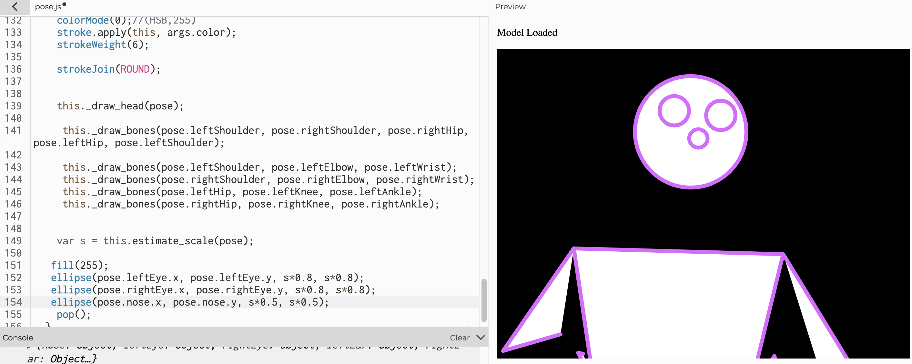

In this class, we will build a high-fidelity prototype that emphasizes "look and feel". The goal of my project is to create a person who can play music from various circles with PoseNet.
Let's begin by drawing the head and shoulder of the skeleton.
To play with the circle later, add the left and right hands
How about my face?😀 Then add a mouth and eyes.
Create a circle that I can add music to later.
The circle will turn red when I touch it.